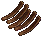

×5
×5 ×1
×1 ×1
×1
 ×15×8
×15×8 ×1×1×2
×1×1×2 ×10
×10| ×5 |
細工 | ×1 |
大工 | ×1 |
細工 | |
| ×15 |
大工 | ×3 | ||||
| ×8 |
大工 | ×1 |
||||
| ×1 |
||||||
| ×2 |
細工 | ×1 | ||||
| ×10 |
||||||
| ポーション樽の表示名 A Keg of ○○ Liquid |
入れたポーション液 |
| Red | Reflesh系 |
| Blue | Agility系 |
| Black | Nightsight |
| Yellow | Heal系 |
| White | Strength系 |
| Green | Poison系 |
| Orenge | Cure系 |
| Purple | Explosion系 |
| Fiery | Conflagration系 |
| Lifeless | Mask of Death系 |
| Muddled | Confusion Blast系 |
| Muddled | Invisibility |
| Murky | Parasitic |
| Baneful | Darkglow |
| 残量 | メッセージ |
| 100 | 樽は一杯です。 |
| 99〜96 | 液体が樽のふた近くまで注がれています。 |
| 95〜80 | 樽はほぼ一杯です。 |
| 79〜70 | 樽には3/4ほど注がれています。 |
| 69〜54 | 樽には半分以上注がれています。 |
| 53〜47 | 樽にはほぼ半分ほど注がれています。 |
| 46〜40 | 樽には大体半分ほど注がれています。 |
| 39〜30 | 樽には1/3ほど注がれています。 |
| 29〜20 | 樽には1/4ほど注がれています。 |
| 19〜5 | 樽にはまだ余裕があります。 |
| 4〜1 | 樽はほとんど空です。 |
| 0 | 樽は空です。 |